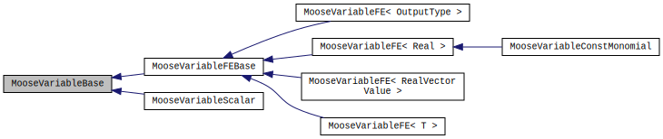

- blockThe list of block ids (SubdomainID) that this object will be applied
C++ Type:std::vector
Description:The list of block ids (SubdomainID) that this object will be applied
- components1Number of components for an array variable
Default:1
C++ Type:unsigned int
Description:Number of components for an array variable
- familyLAGRANGESpecifies the family of FE shape functions to use for this variable.
Default:LAGRANGE
C++ Type:MooseEnum
Description:Specifies the family of FE shape functions to use for this variable.
- fvFalseTrue to make this variable a finite volume variable
Default:False
C++ Type:bool
Description:True to make this variable a finite volume variable
- initial_conditionSpecifies the initial condition for this variable
C++ Type:std::vector
Description:Specifies the initial condition for this variable
- orderFIRSTOrder of the FE shape function to use for this variable (additional orders not listed here are allowed, depending on the family).
Default:FIRST
C++ Type:MooseEnum
Description:Order of the FE shape function to use for this variable (additional orders not listed here are allowed, depending on the family).
- use_dualFalseTrue to use dual basis for Lagrange multipliers
Default:False
C++ Type:bool
Description:True to use dual basis for Lagrange multipliers
MooseVariableBase
Base class for Moose variables. This should never be the terminal object type
The current class hierarchy for Moose variables is shown below:

Moose variable hierarchy.
MooseVariableBase is the primitive base class from which all variables inherit. It includes methods for accessing the variable finite element type and order, degress of freedom, scaling factor, name, and associated SystemBase. Two classes inherit directly from MooseVariableBase: MooseVariableFEBase and MooseVariableScalar. MooseVariableScalar represents a Moose variable that is constant over the spatial domain. It has a number of degrees of freedom equal to the order of the variable, e.g. the following variable block would declare a MooseVariableScalar with two associated degrees of freedom:
[AuxVariables]
[aux_scalar]
order = SECOND
family = SCALAR
[]
[]
MooseVariableFEBase is an abstract class that encompasses all finite-element type variables; all variables that vary spatially ultimately inherit from MooseVariableFEBase. The class implements all the relevant variable methods other than those that return the actual variable solution or variable shape functions, since the return type in the latter case depends on whether the finite-element variable is scalar-valued (single-component) or vector-valued (multi-component) in nature. The existence of the MooseVariableFEBase class allows construction of containers that hold both single- and multi-component finite element variables. This is useful for instance in the Assembly class where we can abstract the coupling matrix entries or in Jacobian computing objects like Kernels when we want to fetch the numerical ID of the variable using coupled. Moreoever, this design structure mirrors that of the FE design in LibMesh, where FEAbstract is an abstract base class that implements all methods independent of FE type and the class template FEGenericBase<T> implements the type dependent methods analogous to MooseVariableFE<T>.
MooseVariableFE<T> implements methods that return the variable's solution and its associated shape functions. Additionally, it contains the methods responsible for computing the variable solution at quadrature points given the degree of freedom values computed from the previous non-linear solution. "Standard" or "traditional" finite element variables that are single-component are instantiated with the template argument Real; these hold variables of finite element families LAGRANGE, MONOMIAL, HERMITE, etc. Multi-component vector finite element variables are instantiated with the template argument RealVectorValue and currently encompass the finite element familes NEDELEC_ONE and LAGRANGE_VEC. The former is useful for electromagnetic applications or for general PDEs that involve a curl operation. The latter is potentially useful for tensor mechanic or Navier-Stokes simulations where historically displacement or velocity variables have been broken up component-wise. To hide the templating of the Moose variable system from other framework code, MooseVariableFE<Real> and MooseVariableFE<RealVectorValue> have been aliased to MooseVariable and VectorMooseVariable respectively.
Finally, MooseVariableConstMonomial is a class that takes advantage of its finite element type (constant value on an element) to optimize its solution computing routines. Consequently, it overrides the computeElemValues and similar methods of MooseVariableFE<Real>.
Accessors
There are a myriad of ways to access Moose variables from user interfaces. We'll outline a few below.
SystemBase
It's common for interface objects (Kernel objects for example) to have a _sys member. The _sys member has the following variable accessor methods which take a THREAD_ID and either a std::string variable name or unsigned variable ID as arguments:
getVariable: returns a reference to aMooseVariableFEBase. Useful when access to the variable finite element solution or shape functions is not neededgetFieldVariable: this is a templated method that takes as its template argument eitherRealorRealVectorValueand returns a reference to aMooseVariableor aVectorMooseVariablerespectively. Useful when the user knows and needs the complete typegetScalarVariable: returns a reference to aMooseVariableScalar
These getter methods ultimately query different map containers in the VariableWarehouse.
SubProblem
Another common interface object member is _subproblem. _subproblem has the following acessors methods which take THREAD_ID and a std::string variable name as arguments (note that acessors through variable IDs do not exist through SubProblem):
getVariable: returns a reference to aMooseVariableFEBase. Useful when access to the variable finite element solution or shape functions is not needed. CallsSystemBase::getVariablegetStandardVariable: returns a reference to aMooseVariable. Useful when the user knows and needs the complete type. CallsSystemBase::getFieldVariable<Real>getVectorVariable: returns a reference to aVectorMooseVariable. Useful when the user knows and needs the complete type. CallsSystemBase::getFieldVariable<RealVectorValue>getScalarVariable: returns a reference to aMooseVariableScalar
Note that the template abstraction available in SystemBase is not available in SubProblem. This is because the accessor methods in SubProblem are pure virtual, i.e. their implementations are made in derived classes which eliminates the choice of a templated accessor method in the base SubProblem class.
Coupleable
Since most interface objects already supply the user with the primary variable, the most common way a user should be accessing Moose variables is through Coupleable methods. The following accessor methods return actual Moose variable objects and take as arguments the variable name and the "component" which is used when the user passes in multiple variables to a single CoupledVar parameter:
getFEVar: returns a pointer to aMooseVariableFEBase. Useful when access to the variable finite element solution or shape functions is not neededgetVar: returns a pointer to aMooseVariable. Useful when the complete type is neededgetVectorVar: returns a pointer to aVectorMooseVariable. Useful when the complete type is needed
When the user/developer wants access to multiple/all coupled variables, they can call the following methods which take no arguments:
getCoupledMooseVars: returns all coupled Moose variables, i.e. both single-componentMooseVariablesand multi-componentVectorMooseVariables. Consequently the return type isstd::vector<MooseVariableFEBase *>getCoupledStandardMooseVars: returns all coupled single-componentMooseVariablesas astd::vector<MooseVariable *>getCoupledVectorMooseVars: returns all coupled multi-componentVectorMooseVariablesas astd::vector<VectorMooseVariable *>
Often times there is no need for the user/developer to access the actual Moose variable object. Instead they require the variable finite element solution or gradient. Some of these methods are exemplified below:
coupledValue: takes a variable name (should correspond to a single-componentMooseVariable) and returns the finite element solution at the quadrature points (VariableValue)coupledVectorValue: takes a variable name (should correspond to a multi-componentVectorMooseVariable) and returns the finite element solution at the quadrature points (VectorVariableValue)coupledGradient: takes a variable name (should correspond to a single-componentMooseVariable) and returns the finite element solution gradient at the quadrature points (VariableGradient)coupledCurl: takes a variable name (should correspond to a multi-componentVectorMooseVariable) and returns the curl of the finite element solution at the quadrature points (VectorVariableCurl)
Input Parameters
- control_tagsAdds user-defined labels for accessing object parameters via control logic.
C++ Type:std::vector
Description:Adds user-defined labels for accessing object parameters via control logic.
- eigenFalseTrue to make this variable an eigen variable
Default:False
C++ Type:bool
Description:True to make this variable an eigen variable
- enableTrueSet the enabled status of the MooseObject.
Default:True
C++ Type:bool
Description:Set the enabled status of the MooseObject.
- outputsVector of output names were you would like to restrict the output of variables(s) associated with this object
C++ Type:std::vector
Description:Vector of output names were you would like to restrict the output of variables(s) associated with this object
- scalingSpecifies a scaling factor to apply to this variable
C++ Type:std::vector
Description:Specifies a scaling factor to apply to this variable
Advanced Parameters
Child Objects
- framework/include/variables/MooseVariableScalar.h
- framework/include/variables/MooseVariableFieldBase.h